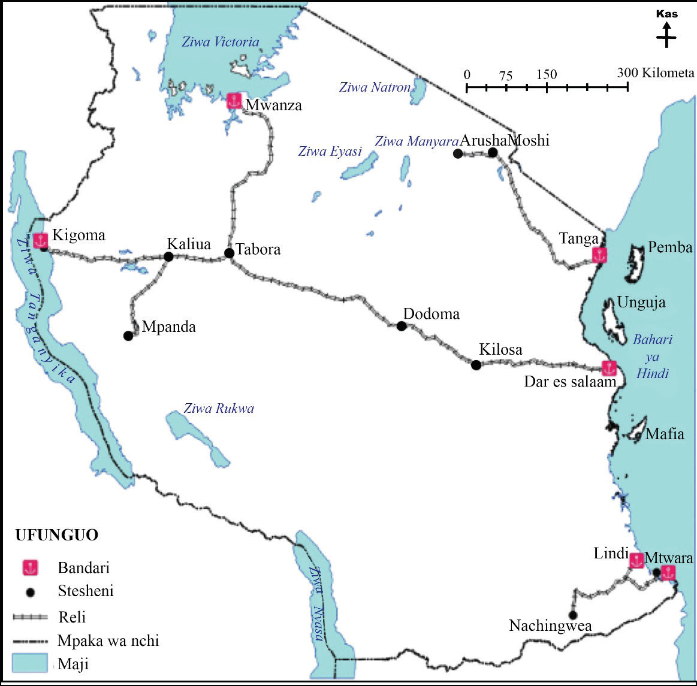

(c) Uboreshaji wa huduma za afya:Kabla ya ukoloni, jamii za Kitanzania zilitumia tiba asilia kwa kutegemea waganga wa jadi na mitishamba.Wakoloni walileta huduma za afya za kisasa kwa kujenga zahanati na vituo vya afya na hospitali ili kuhakikisha wafanyakazi wa mashamba na migodini wanakuwa na afya bora.Magonjwa hatari kama ndui, malaria, malale na homa ya matumbo yalidhibitiwa kwa kiwango fulani kupitia chanjo na matumizi ya dawa za kisasa, huku idara ya afya ya kikoloni ikihamasisha usafi wa mazingira, lishe bora na matumizi ya tiba za kisasa.Ingawa huduma hizi zililenga zaidi kulinda wafanyakazi wa kikoloni, Watanganyika walifaidi kwa kupunguza vifo vya watoto wachanga na kuongeza matumaini ya kuishi muda mrefu.